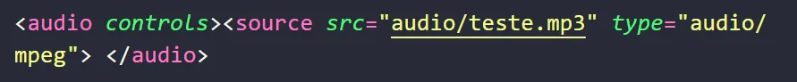
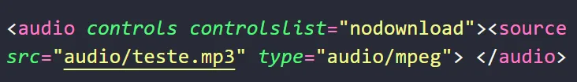
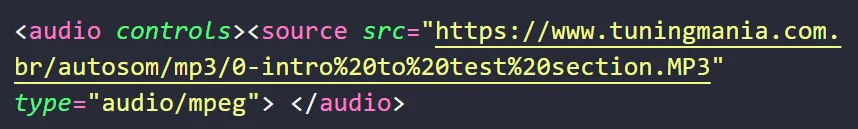

A tag de áudio se chama <audio></audio> e dentro dessa tag teremos uma tag filho que é a <source>
e dentro dela utilizamos o atributo src igual se fizessemos com imagens e deentro das aspas duplas colocamos
o caminho dee onde esta o nosso audio, pode ser um caminho relativo ou pode ser um caminho absoluto que significa
que pode ser um link ou pode sr um arquivo que temos dentro do nosso projeto e alem disso precisamos espesificar o
tipo do nosso arquivo, o tipo de arquivo do mp3 é do tipo áudio/mpeg e temos outro forma quee
vemos na internet que é o ponto ogg ao inves de mp3 e no lugar de
mpeg usamos ogg e temos tambem o wav no lugar de
ogg e alem disso precisamos colcocar um atributo dentro de tag audio que seria o
controls, porem o mp3 nao deixa de ser o mais utilizado nesse caso fica:

E o reesultado é:
É de grande utilização tambem um paragrafo de oque foi falado no audio, caso seja um conteudo falado, por exemplo em
blogs que costuma ter muito conteudo, geralmente se coloca essa tag de audio primeiro e depois um paragrafo com
exatamente o conteudo do audio.
A opção de fazer o dowload do audio na pagina web é padrão, mas caso seja de vontade do desenvolvedor que o usuario
do site baixe o arquivo do audio basta adicionarmos o seguinte atributo:

Tambem podemos ao inves de utilizar um arquivo mp3 de dentro do nosso projeto, usar um link absoluto de audio,
lembrando que esse link para que ele funcione tem que terminar com .mp3.
Exemplo:

Resultado:
Conclusão
A tag <audio> é uma ferramenta essencial para incorporar arquivos de áudio em páginas web, permitindo que os
usuários ouçam conteúdos diretamente no navegador. Utilizando a tag <source>, podemos especificar diferentes
formatos de áudio, como MP3 (audio/mpeg), OGG (audio/ogg) e WAV (audio/wav), garantindo maior compatibilidade entre
navegadores.
Além disso, o atributo controls adiciona um player interativo para que os usuários possam reproduzir, pausar e
ajustar o volume do áudio. Caso seja necessário restringir o download do arquivo, podemos utilizar o atributo
controllist="nodownload". Também é possível fornecer o áudio por meio de links absolutos, desde que terminem em
.mp3.
Por fim, para tornar o conteúdo mais acessível, é recomendável incluir um parágrafo com a transcrição do áudio,
especialmente em blogs e sites informativos. Dessa forma, garantimos que todos os usuários possam consumir o
conteúdo, independentemente da forma como preferem acessá-lo.